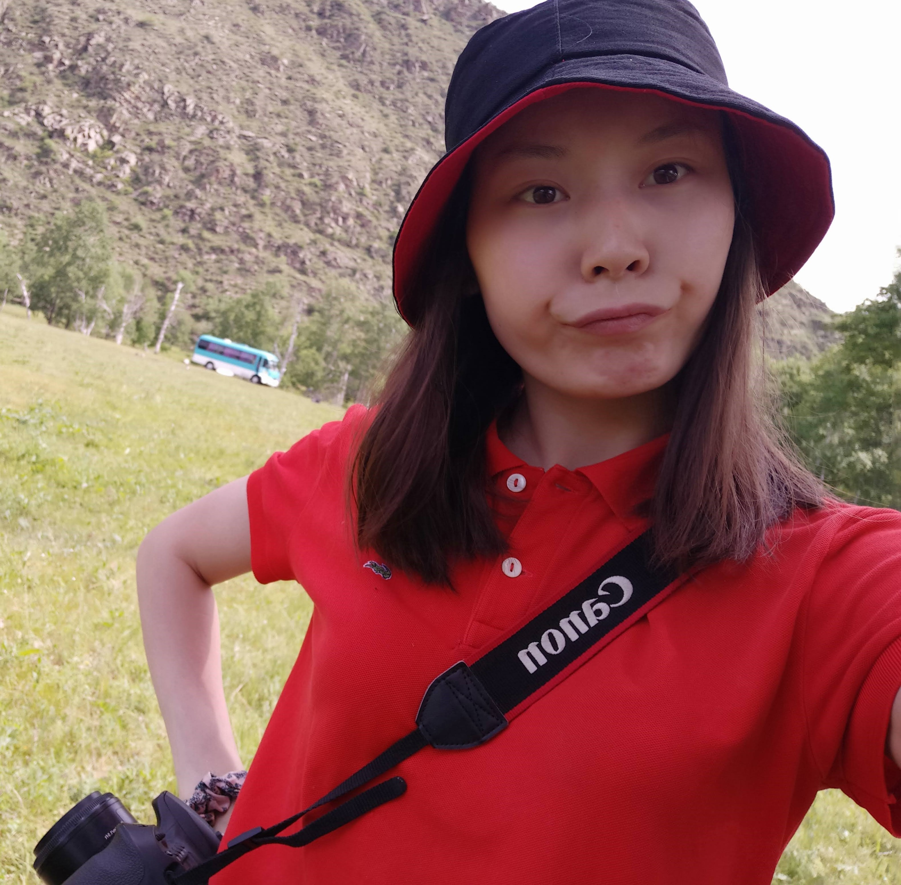

I am currently a graduate student at the Changwon National University’s Department of Computer Engineering. My research interests are biological data classification utilizing machine learning and deep learning.
Area of interest: Machine learning and deep learning
As a full-time research student, I studied biological data identification and classification analysis. In doing so, the seed coat patterns were studied using scanning electron microscopy (SEM) images in collaboration with the Departments of Biology & Microbiology and Computer Engineering, and I was identified and classified. The task was completed by collecting data from several publications and then preprocessing the images. In addition, I did two main tasks.These include seed coat pattern image categorization and new groups based on seed coat pattern images. First, I defined the seed coat pattern and classified it using the popular Deep Learning network. Second, new grouping was conducted using unsupervised machine learning on the preprocessed images.
Front-End DeveloperI worked as a front-end developer at DDISH LLC, a subsidiary of MCS Group, a large Mongolian group. During this time, our company upgraded its previously used Call Center system. The following are included: JavaScript (ReactJS), HTML, CSS, and Material UI.
Software EngineerWhen I first started as a software developer at the company, the KPI of call center system operators was handled manually. Therefore, work was done to design a KPI automation module for the call center system. PHP Symfony Framework, advanced database was used as technologies. I was challenged by the unknown and new technologies while working at the organization.
InternMy internship taught me basic concepts of natural language processing (NLP) and found between word similarity and distance-based cosine similarity using Java.
I studied several technical programming languages for engineering during my bachelor of engineering program and learned about the fundamentals of engineering.
Master of Engineering, GPA: 3.8/4.5In my master of engineering degree, I proposed my own research methodologies and had a thorough understanding of computer science concepts.
Worked as a conference president to improve the activity and knowledge of the members. Our team consists of members in marketing, finance, external relations, delegate experience, and logistics.
Vice President Logistic of Summer National ConferenceCollected and provided the materials needed for training and delegates. Manage the conference logistics in terms of venue, transportation, materials. Allocate and track all the conference materials for its sufficiency.
Member of Incoming Global VolunteerLearned how to interact with international people and connect with my team.
Color-Blind Image Correction Poster Session at the 10th International Conference on the Frontiers of Information Technology, Application and Tools (FITAT), 2017.
CertificationFoundation of User Experience (UX) Design at Coursera - Google
Deep Learning - Deep Learning UB 2018
PublicationAriunzaya Gantulga et al., “A multi-considered seed coat pattern classification of Allium L. using unsupervised machine learning”, Plants 2022, 11(22), 3097, under MDPI.
Ariunzaya Gantulga, Jonathan CL Kavalan, and Sungwook Chung “Identification of Seed Coat Sculptures using Deep Learning” ,Journal of Asia-Pacific Biodiversity, 2022, under Elsevier.